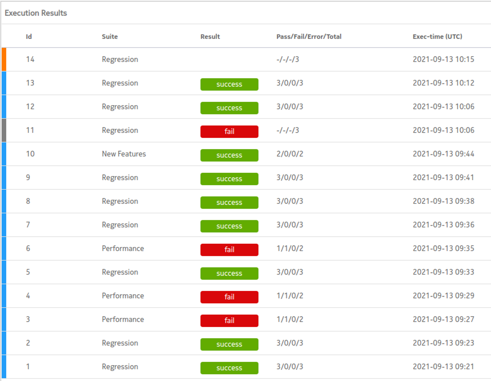

CCTF lists the history of all execution jobs in the Execution Results view. The following figure presents an example of the execution job history.
Figure: Example of the execution job history

| Data | Decsription |
|---|---|
| Job status | Color bar in the left-hand side of each job. The colors represent the
status of the jobs as follows:
|
| id | The job identity. |
| Suite | The test suite (button) this job belongs to. |
| Result | The test suite execution result:
|
| Pass/Fail/Error/Total | The number of the test suites that passed, failed, had an error, and the total number of the test cases, respectively. |
| Exec-time (UTC) | The execution time of the job. |
 Note:
Note: